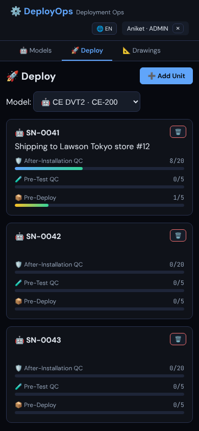
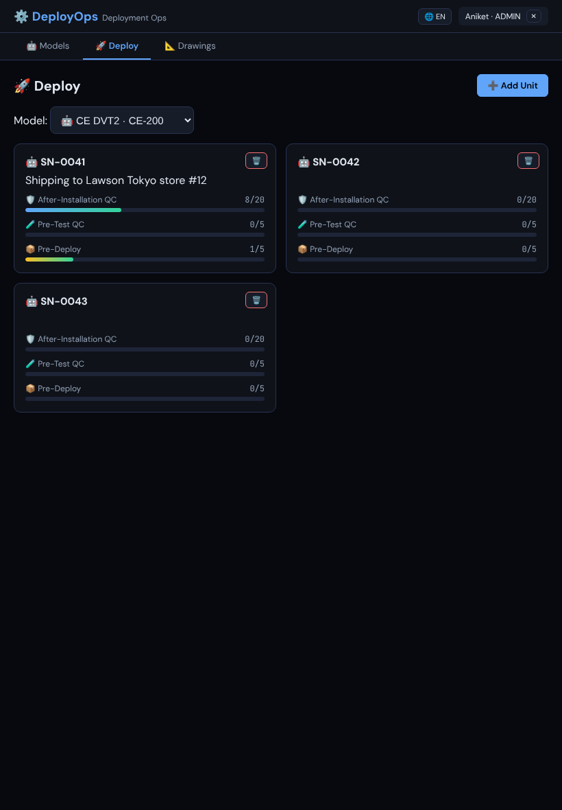
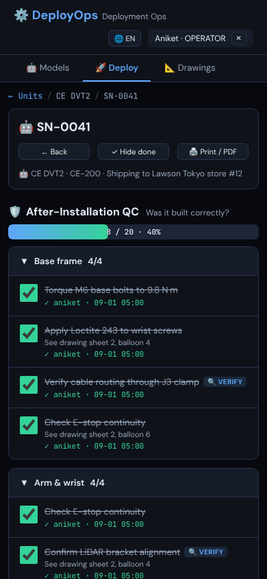
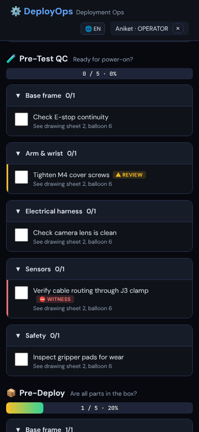
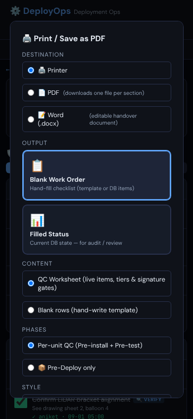
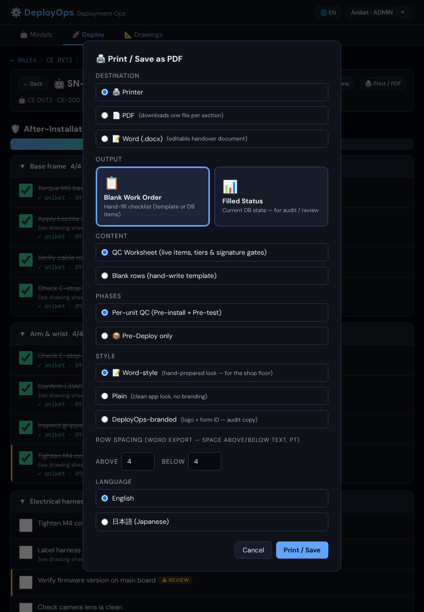
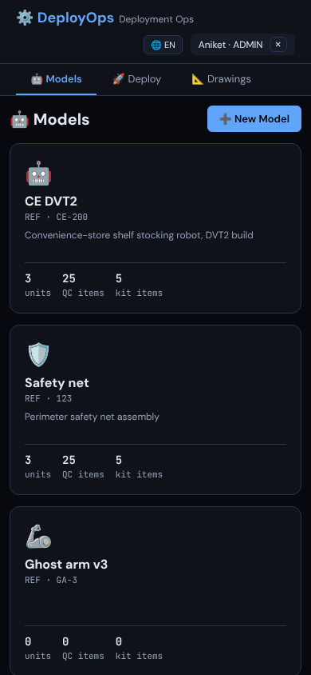
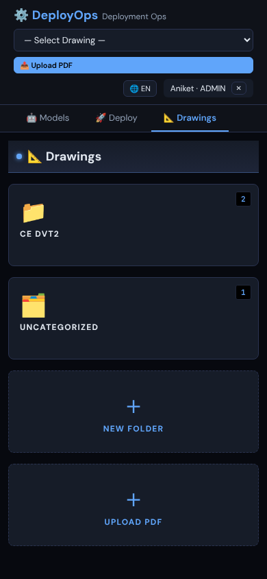

Critique and mockups for five screens of the robot QC app, phone first, that Claude Code can build in plain HTML and CSS inside the existing single-file app.
From Claude CodeTo Claude DesignApprover AniketRepo docs/phase2/
01
What we need back
Design reviewsThis brief and the current screenshots below.
Design returnsA ranked critique and mockups for screens A to E.
Code buildsImplements the mockups and re-screenshots at the same sizes.
Design checksCompares the build with the mockups until accepted.
#
Deliverable
Format
D1
Critique of the current screens, top problems ranked
Notes or annotated images
D2
Mockups for screens A–E at 390 px (phone) and 820 px (iPad portrait); desktop optional
Static HTML preferred, saved under design/phase2/
D3
Every state listed under each screen (empty, loading, error, read-only…)
Inside the mockups
D4
New or changed tokens and components, with values
A short list ready to paste into CSS
D5
Copy for new labels, buttons and empty states; Japanese if possible
List
02
The product and its users
DeployOps is the QC app for building and shipping Telexistence robots. An admin defines a model such as CE DVT2 with a checklist split into three phases: After-Installation QC (was it assembled correctly?), Pre-Test QC (ready for power-on?) and Pre-Deploy (are all parts in the box?). Each physical robot is a unit such as SN-0041. Operators tick every item of every phase for that unit and the app records who ticked it and when.
Role
Who
Where and how
Can do
Admin
Aniket, 1–2 people
Desk and iPad
Models, checklists, units, drawings, prints
Operator
Assembly and QC technicians
Shop floor, iPad or phone, often gloved, standing, interrupted
Tick unit checklists, print
Viewer
Managers, reviewers
Desk
Read-only, print
Design for touch targets of at least 44 px, glanceable progress, one-handed phone use, no precision gestures for core tasks, and an obvious answer to "where did I leave off?". Shop-floor lighting varies, so contrast matters.
03
Data you can design with
Model: name, ref, revision, emoji icon, description, EN and JA name
Section: name (EN/JA), icon, order; items are grouped by section
Item: label (EN/JA), description, part number, qty, tool, one or more phases, tier, order
Unit: serial, notes, model, created date; new: status (proposed building, testing, ready, shipped, deployed)
Tick: per unit, item and phase: checked, checked by, checked at
Volume: 5 models, about 317 items and 23 sections in the main model; dozens of units per model
PlainTick when done.
VerifyTick plus a small confirmation.
ReviewA supervisor must tick.
WitnessSafety-critical. Someone must watch and tick; the operator does not proceed alone.
Phase 3 will enforce Review and Witness with a second signature. Please design those visual states now so the logic slots in later.
04
Constraints
Tech: one index.html, vanilla JS, hand-written CSS. No framework, build step or icon font. Everything must be doable with CSS and inline SVG.
Theme: dark UI. Keep these tokens unless you have a reason to change them (list changes in D4). Type is DM Sans for UI and JetBrains Mono for counts, refs and timestamps; radius 6–12 px.
Bilingual: every label has a Japanese version; allow wrapping without breaking layout.
Roles: admin-only controls are hidden for other roles and viewers see disabled checkboxes. Show what each role sees.
Out of scope: the light paper worksheets that print produces. Only the print dialog is in scope.
--bg #07090f
--surface #0f1219
--surface2 #161c28
--surface3 #1e2538
--border #2a3350
--text #e2e8f0
--text2 #94a3b8
--accent #60a5fa
--accent2 #818cf8
--green #34d399
--orange #fbbf24
--red #f87171
05
Screens in scope
Screenshots are the current build with sample data, after the Phase 0 and 1 fixes. Full-size files are in docs/phase2/screens/.

phone 390

iPad 820
A
Deploy dashboard: units of a model
Today
A native model dropdown, then one card per unit with a progress bar per phase and a delete button.
Problems
No status, search, sort or filter
You can't tell at a glance which units need attention
Cards are tall: three per phone screen
The model picker is the main navigation but looks like a form field
Goals
An operator opens it and sees what's next
Unit status with colour and shape coding, and who can change it
Search by serial, filter by status, sort by recent, least complete or name
Compact rows for 50+ units, phase progress still visible
Switching model feels like navigation
Add unit and delete stay available, out of the thumb path
States
No modelsNo unitsLoadingNo filter resultsViewer

phone 390, top

phone 390, lower
B
Unit checklist, the most-used screen
Today
Header with back, serial, hide done and print; then each phase as a heading, progress bar and collapsible section cards. Rows are full-width tap targets with tier badges and a coloured edge for Review and Witness.
Problems
Three long phases stacked in one scroll; phase headers scroll away
No "next unchecked" or sense of position in a 300-item list
Hold points are only a small badge
No sign-off concept; tick save or failure is only a toast
Goals
Phase navigation on a phone: tabs, sticky header or jump list
A "next unchecked" action
Distinct Verify, Review and Witness treatment, including "waiting for witness" and "signed by X"
Phase sign-off: a completed phase looks locked once signed
Keep whole-row tap, who and when on ticked rows, and hide done
Model cards, then inside a model: phase tabs, a grid of section tiles, and a tap into one section to see its items. Item rows have up, down, edit and delete buttons. A brush mode paints phase membership onto items by tapping; there is inline add and a bulk-add dialog. See also 01-models and 04-edit-item.
Problems
Items hidden one level deep behind tiles; sections are hard to scan or compare
On a phone the action buttons wrap to their own row, doubling the list length
Reordering with up and down buttons is slow
Brush mode isn't discoverable
Goals
A flat list: sections as collapsible groups showing their items
Compact phone rows, actions in an overflow menu or swipe
Drag-handle reorder with an accessible fallback
Show each item's tier and the other phases it belongs to
Make multi-phase assignment understandable
Shorter model cards showing items, units and revision
States
No sectionsEmpty sectionRead-only

phone 390

iPad 820
D
Print and export dialog
Today
One long modal with 11 option groups: destination, output, content, phases, style, row spacing and language. About three screens tall on a phone.
Goals
A short default path: what and where, then Print
Style, spacing and language under Advanced
Remember the last choices
Show what will be produced, for example "1 PDF · 3 phases · 23 sections"
Design for a single combined PDF; code will add it

phone 390, Models

phone 390, Drawings
E
Top bar and navigation on phone
Today
Brand and subtitle, language toggle, user badge with sign-out, then Models, Deploy and Drawings tabs. On Drawings a full-width drawing dropdown and upload button push the tabs down. About 120 px before any content.
Goals
Reclaim vertical space on phone
One place for user, language and sign-out
Decide whether tabs become a bottom bar for one-handed use
Keep the signed-in role visible
06
Acceptance and scope
Mockups are accepted when
Every screen is shown at 390 px and 820 px with no sideways scroll
Touch targets are at least 44 × 44 px
Text meets WCAG AA: 4.5:1 body, 3:1 large text and UI
Every listed state is shown
Existing tokens are used, or new ones are listed in D4
Admin, operator and viewer differences are shown or annotated
Not in Phase 2
Drawing editor and toolbar (Phase 5)
Paper worksheet layouts
Login screen, already fixed
Second-signature and sign-off logic (Phase 3); design the looks only
Complete Japanese copy (Phase 4)
07
Open questions
Answer these, or flag them for Aniket.
Which unit status values, and who may change them: operator, admin, or automatic from progress?
On a phone, keep the top tabs or move to a bottom tab bar?
Should the unit checklist show one phase at a time, or all phases with a sticky jump bar?
Replace the emoji icons with an SVG set now, or keep emoji for Phase 2?
Does the Deploy tab need a cross-model view, such as all units in testing?